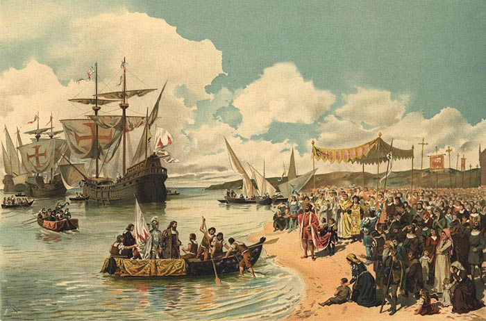
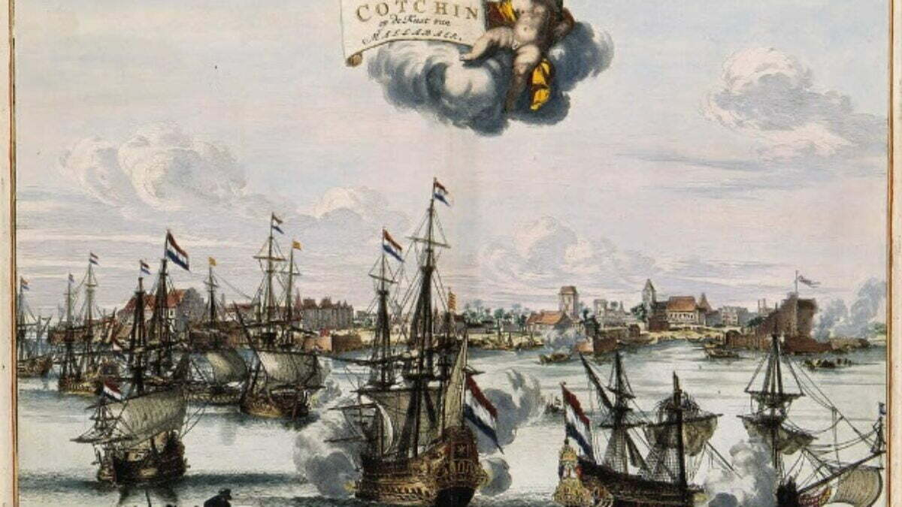
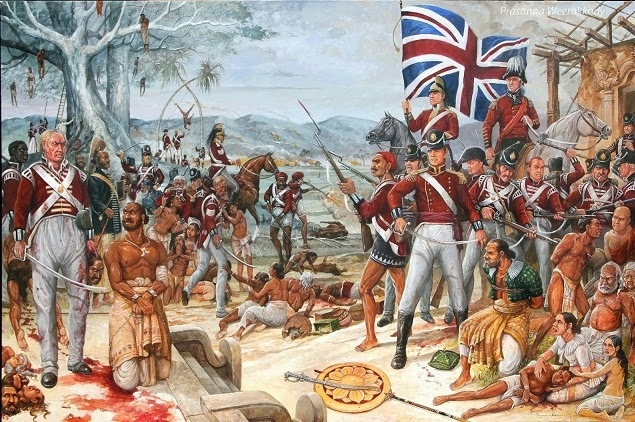
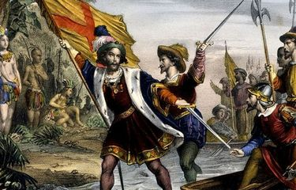

Kedatangan Bangsa Eropa di Indonesia
Pengertian
Kedatangan bangsa Eropa di Indonesia merujuk pada periode sejarah ketika negara-negara Eropa mulai melakukan ekspansi ke wilayah Asia Tenggara, khususnya kepulauan Indonesia, untuk kepentingan perdagangan dan kolonisasi. Peristiwa ini dimulai pada akhir abad ke-15 dan berlanjut hingga awal abad ke-20. Bangsa Eropa yang terlibat dalam proses ini termasuk Portugis, Spanyol, Belanda, dan Inggris, masing-masing dengan tujuan dan dampak yang berbeda.
Tujuan
- Ekonomi: Mengakses dan mengontrol perdagangan rempah-rempah serta eksploitasi sumber daya alam untuk keuntungan ekonomi.
- Kolonialisasi: Mengakses dan mengontrol kolonisasi bangsa Eropa untuk kepentingan kolonisasi.
- Perdagangan Internasional: Mengakses dan mengontrol perdagangan rempah-rempah dan sumber daya alam untuk kepentingan perdagangan internasional.
- Politik: Memperluas kekuasaan dan pengaruh dengan menguasai wilayah strategis serta berkompetisi dengan negara Eropa lainnya.
- Strategis: Mengamankan jalur perdagangan maritim dan membangun benteng serta pos-pos perdagangan untuk melindungi kepentingan kolonial.
Kesimpulan
Kesimpulan dari kedatangan bangsa Eropa ke Indonesia adalah bahwa peristiwa ini memulai era kolonialisme yang berlangsung selama berabad-abad dan membawa dampak signifikan dalam berbagai aspek kehidupan di Nusantara. Bangsa Eropa, yang datang dengan tujuan utama menguasai perdagangan rempah-rempah dan memperluas kekuasaan, menerapkan monopoli perdagangan dan eksploitasi sumber daya alam serta tenaga kerja lokal. Meskipun kedatangan mereka memperkenalkan teknologi baru dan sistem administrasi kolonial, dampak negatif berupa penindasan dan eksploitasi mendominasi kehidupan masyarakat Indonesia. Kedatangan ini juga memicu resistensi dan gerakan nasionalis yang pada akhirnya membawa Indonesia meraih kemerdekaan pada tahun 1945.
Kedatangan Bangsa Portugis
Portugis adalah bangsa Eropa pertama yang tiba di Indonesia pada awal abad ke-16. Penjelajah Portugis seperti Vasco da Gama, yang mencapai India, tidak lama kemudian mengarahkan pandangannya ke Kepulauan Maluku, dikenal sebagai "Spice Islands" karena kekayaan rempah-rempahnya. Pada tahun 1512, Alfonso de Albuquerque tiba di Maluku, memulai eksplorasi dan upaya kolonialisasi.

Portugis mendirikan beberapa pos perdagangan di Indonesia, termasuk di Ternate dan Tidore, untuk mengontrol perdagangan rempah-rempah. Mereka juga berperan dalam memperkenalkan agama Katolik dan beberapa aspek budaya Eropa di wilayah ini. Konflik dengan kekuatan lokal dan bangsa Eropa lainnya seperti Belanda mengakibatkan Portugis kehilangan banyak wilayah kekuasaannya.
Meski demikian, warisan Portugis masih dapat dilihat dalam beberapa aspek budaya Indonesia, seperti dalam bahasa dan arsitektur. Keberadaan mereka membuka jalan bagi penjelajahan dan kolonialisasi oleh bangsa Eropa lainnya.
Kedatangan Bangsa Belanda
Belanda tiba di Indonesia pada akhir abad ke-16 dengan mendirikan Vereenigde Oostindische Compagnie (VOC) pada tahun 1602. VOC merupakan perusahaan dagang yang berperan besar dalam penguasaan perdagangan rempah-rempah di Asia Tenggara. Belanda memulai ekspansi mereka dengan mendirikan pos-pos perdagangan di berbagai wilayah Indonesia, termasuk Maluku dan Jawa.

Pada tahun 1619, Belanda mendirikan Batavia (sekarang Jakarta) sebagai pusat administrasi dan perdagangan mereka di Asia Tenggara. VOC berperan dalam banyak aspek kehidupan masyarakat Indonesia, mulai dari administrasi pemerintahan hingga pembangunan infrastruktur, termasuk jalan dan kanal. Meskipun VOC dibubarkan pada tahun 1799, Belanda terus menguasai Indonesia hingga kemerdekaan pada tahun 1945.
Selama periode Belanda, banyak perubahan sosial, politik, dan ekonomi terjadi di Indonesia. Pengaruh Belanda dalam pendidikan, hukum, dan pemerintahan masih terasa hingga saat ini.
Kedatangan Bangsa Inggris
Inggris mulai menjalin hubungan perdagangan dengan Indonesia pada awal abad ke-17 melalui East India Company (EIC). Meskipun Inggris berusaha memperluas pengaruh mereka di Asia, mereka menghadapi persaingan ketat dari Portugis dan Belanda.

Inggris menguasai beberapa wilayah di Indonesia, seperti Bali dan Sumatra, selama periode kolonial singkat antara tahun 1811 dan 1816, terutama selama Perang Napoleon. Setelah periode tersebut, Inggris menyerahkan kendali kepada Belanda melalui Perjanjian London.
Pengaruh Inggris di Indonesia relatif singkat, tetapi reformasi yang mereka bawa dalam administrasi dan perdagangan memberikan beberapa dampak pada perkembangan wilayah ini. Selain itu, Inggris juga terlibat dalam diplomasi internasional yang mempengaruhi politik kolonial di Asia Tenggara.
Kedatangan Bangsa Spanyol
Spanyol tiba di Indonesia pada abad ke-16, terutama di wilayah timur. Penjelajah Spanyol seperti Ferdinand Magellan mengunjungi Kepulauan Maluku, yang terkenal dengan rempah-rempahnya, selama perjalanan mereka mencari rute perdagangan ke Asia.

Spanyol mendirikan beberapa pos perdagangan di wilayah timur Indonesia, namun pengaruh mereka tidak sebesar Portugis atau Belanda. Mereka lebih fokus pada kolonialisasi di Filipina dan wilayah lainnya di Asia Tenggara, sehingga kehadiran mereka di Indonesia relatif singkat dan terbatas.
Meski pengaruh mereka tidak sebesar kekuatan Eropa lainnya di Indonesia, peran Spanyol dalam sejarah penjelajahan Eropa tetap signifikan dalam konteks global dan regional.
Kedatangan Bangsa Prancis
Prancis memiliki kehadiran terbatas di Indonesia pada abad ke-19, lebih fokus pada kolonialisasi di wilayah Asia Tenggara lainnya seperti Indochina. Meskipun demikian, Prancis menjalin hubungan perdagangan dan politik dengan beberapa kerajaan di Indonesia.
Prancis terlibat dalam beberapa perjanjian perdagangan dan politik dengan kerajaan-kerajaan di Indonesia. Namun, pengaruh mereka tidak sebesar Belanda atau Inggris. Prancis lebih menitikberatkan perhatian mereka pada koloni mereka di Indochina.
Pengaruh Prancis dalam diplomasi dan perdagangan memberikan beberapa dampak pada hubungan internasional Indonesia, meskipun pengaruhnya lebih terbatas dibandingkan kekuatan kolonial lainnya.